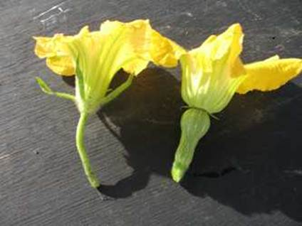
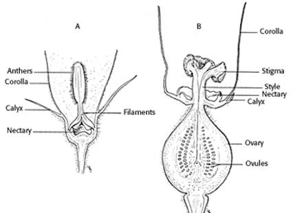
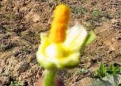
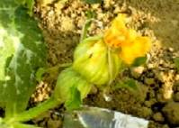
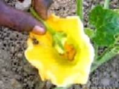

GPBR 112 :: Lecture 22 :: SEED PRODUCTION OF CUCURBITACEOUS VEGETABLES

Land Requirements: There are no land requirements as to previous crop, but the land should be free of volunteer plants. Generally the soil should be well drained and aerated.
Isolation Requirements: Most of the cucurbits are monoecious in character and a few are dioecious. A number of hermaphrodite and andromonoecious cultivars are also available in some crops. Pollination is largely done by insects. For pure seed production and isolation distance all around seed field is necessary to separate it from fields of other varieties, fields of the same variety not conforming to varietal purity requirements for certification, from wild cucurbit species, and to separate musk melon from long melon and vice versa, and pumpkin from summer and winter squashes and vice versa as follows
Class Minimum distance (meters)
Foundation 1000
Certified 500
Flower structure in cucurbits


GENETIC PURITY AND SEED HEALTH STANDARDS FOR CUCURBITS
Factors |
Minimum permitted level(%) |
|
FS |
CS |
|
Open pollinated variety |
|
|
Off-type |
0.10 |
0.2 |
Objectional weed plant |
None |
None |
Hybrids |
|
|
Off-type in seed parent |
0.01 |
0.05 |
Off-type in pollen parent |
None |
0.05 |
Pollen shedders in seed parent |
- |
0.10 |
Seed borne diseases *** |
|
|
Muskmelon * |
0.1 |
0.20 |
Summer squash ** |
0.1 |
0.5 |
Cucumber mosaic virus ,** Cucumber mosaic virus, watermelon mosaic virus
SEED CERTIFICATION STANDARDS IN INDIA FOR CUCURBITS
Factors |
Minimum permitted level (%) |
|
|
Foundation seed |
Certified seed |
Pure seed (minimum) |
98 |
95 |
Inert matter (maximum) |
2 |
5 |
other crop seed (maximum) |
None |
None |
Weed seed (maximum) |
None |
None |
Other objectional varieties (only for |
5/kg |
10/kg |
Germination (minimum) |
60 |
60 |
Moisture for ordinary pack (maximum) |
7.0 |
7.0 |
Moisture for vapour proof pack (maximum) |
6.0 |
6.0 |
Seed production details in Cucurbitaceous vegetables
Particulars |
Bittergourd |
Snakegourd |
Ribbedgourd |
Ashgourd / Pumpkin |
Isolation |
Foundation seed 1000 m and certified seed 500 m |
|||
Season |
June - July and Feb – March |
|||
Varieties |
CO1, MDU1, Coimbatore long green & long white |
CO1, CO2, PKM1, MDU1 |
CO1, CO2, PKM 1 |
CO1, CO2 |
Seed rate / ha |
2.5 |
2.5 |
2.5 |
2.5 / 1.0 |
female flower increased by |
Spraying of Ethrel 200 - 250 ppm at two true leaf stage and after a week of 1st spray |
|||
Spacing (cm) |
Take pits of size 45x45x45 cm at 2.5x2.0 m distance |
|||
Fertilizers / (NPK g/pit) |
6:12:6 |
12:24:12 |
9:15:9 |
6:12:6 |
Physiological maturity |
Change of fruit colour in any part or 1/3 of fruit tip to yellow to red |
Complete drying of fruits |
Change of fruit colour to orange brown in pumpkin and ashy coating and metallic sound in ashgourd |
|
Processing |
Hand picking |
Hand picking |
BSS 4 wire mesh sieve |
16/64 round perforated sieve |
Fruit to seed recovery (%) |
30 |
15-16 |
13-14 |
1.0-1.3 |
Seed yield (kg/ha) |
120-150 |
220-250 |
200-250 |
120-150 |
Techniques of Hybrid Seed Production in cucurbits
i. Hand emasculation and hand pollination
This technique is frequently used for melon seed production. In this species, andromonoecious lines are common and they must be emasculated and hand pollinated if used as the female parent for producing hybrid seed. This method has also been used for some watermelon and cucumber hybrids. This technique is applicable for limited scale production, since lot of trained labour are required in pinching, pollen collection and hand pollination.

ii. Hand emasculation and pollination by insect
The male flowers from female lines are pinched off day before of anthesis regularly, which honeybees and other insects (voluntary) uses as a pollinating agents. The male and female are grown in alternate rows. The fruit set on female lines are of hybrid and harvested for seed extraction. The planting ratio varies within the crops e.g. summer squash 3:1 and 4:1 in muskmelon and cucumber but depend upon the population of bees in plot. This technique is also used in bottle gourd, pumpkin, muskmelon, cucumber, summer squash and bitter gourd for hybrid seed production.
iii. Use of genetic male sterility system
Genetic male sterility system has been utilized for commercial hybrid production in muskmelon. The genetic male sterility in muskmelon is controlled by single recessive gene (msms). For hybrid seen production, the male sterile line is used as female parent. Since genetic male sterile line is maintained in heterozygous forms, 50% fertile plants are to be removed at flowering. The other 50% having non-dehiscent empty anther are retained in female rows. The female and male are grown in 4:1 ratio. However, to maintain the good plant population in female rows it is suggested that seed parent should be sown with double seed rate. It is also advised that female line seedling should be raised in polythene bags and transplanted at flower appearance in order to avoid the fertile plants in female rows. The pollination is done by honey bees and 1 to 2 medium sizes hives are good enough to ensure the good pollination and fruit set at female row.
The male sterile line is maintained in heterozygous form by crossing with maintainer line under adequate isolation distance or under cover.
iv. Use of gynoecious sex form
The gynoecious sex form has been commercially exploited in hybrid seed production of cucumber. For hybrid seed production female and male rows are planted in 4:1 ratio. The female (seed parent) bear only female flowers and pollination in done by insect (honeybee). To ensure the good fruit and seed recovery, the sufficient population of honeybee 1 to 1½ colony of medium size has to be kept at the boundary of seed production plot to boost the amount of crossing. The parental lines i.e. male parent maintained by selfing (mixed pollination) and rouge out undesirable plants before contamination take place. The female lines i.e. gynoecious lines maintained by inducing the staminate flower through the sprays of silver nitrate 200 ppm at two to four true leaf stage and then selfing is carried out. It was observed that 10-11 male flowers appear per 100 nodes.
The performance of gynoecious lines is unstable under high temperature and long photo period conditions because of their thermo-specific responses for gynoecious stability. That is why the gynoecious cucumber did not receive much attention in the tropical countries. However, few true breeding tropical gynoecious lines in cucumber and muskmelon have been developed at IARI. As a result of development of true breeding line, muskmelon hybrid Pusa Rasraj was developed. These homozygous gynoecious lines are maintained by using GA3, 1500ppm or silver nitrate 200-300 ppm or sodium thio sulphate 400 ppm to induce staminate flowers at two and four true leaf stage. Homozygous lines are planted in strict field isolation. The gynoecious lines are crossed with monoecious male parent to produce F1 hybrid.
v. Hybrid seed production through chemical sex expression
The hybrid seed can also be produce in cucurbits by the application of chemicals for attaining the sex of cucurbits. Specific chemicals are known to induce femaleness and maleness as desired. The spraying of ethrel (2-choloro-ethyl-phosphonic acid) 200-300 ppm at two and four true leaf stage and another at flowering is useful for inducing the pistilate flower successively in first few nodes on the female in bottle gourd, pumpkin and squash for F1 seed production. The row of male parent is grown side by the side of female and natural cross pollination is allowed. In the absence of insect, hand pollination is possible when two sexes are separate. Four to five fruit set at initial nodes are sufficient for hybrid seed. The complete suppression of male flowers in squash can be achieved by applying ethrel at higher concentration (400-500 ppm) twice.
| Download this lecture as PDF here |